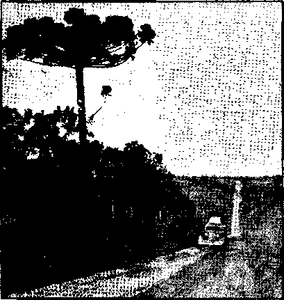
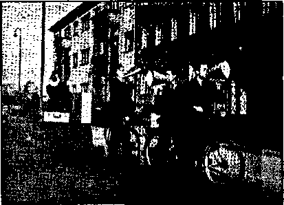
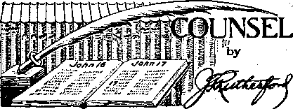

i
■>

Kingdom “locusts” landing on bank of river in Amazonas, Brazil. All travel goes by water.

“Confessions of a French Catholic Priest’* 3
Earth’s Most Corrupt Organization
“Reverend" Bricker—Governor of Ohio
The Nazis in Holland and Norway
The New Government
Obtaining Phonographs in Nyasaland
Massacre of St. Bartholomew Medal
Counsel by J. F. Rutherford .
Greece. Notes on the Campaign; etc.
Italy. “The Fascist" and His Inspiration
Published every other Wednesday by WATCHTOWER BIBLE AND TRACT SOCIETY, INC.
117 Adama St., Brooklyn, N, Y., U. S. A.
Editor Clayton J, Woodworth
BurlneM Manager Nathan H. Knorr
Five Cent* a Copy
It a year In the United States
|1,35 to Canada and all other countries
NOTICE TO SUBSCRIBERS
Remittance*: For your own safety, remit by postal or express money order. When coin or currency la lost 1n the ordinary malls, there la no redress. Remittances from countries other than those named below may bo made to the Brooklyn office, but only by international postal money order.
Reneipt of a new or renewal subscription will be acknowledged only When requested. Notice of Expiration is eent with the journal one month before sub script Ion expires. Please renew promptly to avoid loss of copies. 8«nd change of addrsss direct to us rather than to the post office. Your request should reach us at least two weeks before the date of Issue with which it is to take effect. Send your old as well as the new address. Copies will not be forwarded by the post office to your new address unless extra postage is provided by you.
Published also in Afrikaans, Bohemian, Danish, Dutch, Finnish, French, German, Greek, Hungarian, Japanese, Norwegian, Polish, Portuguese, Spanish, Swedish, Ukrainian; also special Australian edition in English.
OFFICES FOR OTHER COUNTRIES
England St Craven Terrace, London, W. 3
Canada 40 Irwin Avenue, Toronto 5, Ontario
Australia 7 Beresford Road, Strathfield, N.S.W. South Africa 623 Boston House, Cape Town
Entered as second-class matter at Brooklyn, N. Y-, under the Act of March 3, 1879,
The Religious Glowworm
♦ Our Sunday Visitor is one of the most important of the religious periodicals of the Roman Catholic Church in America. The pope says of this religious press that it is his very'own .voice; so whatever appears in it is bf more than ordinary- importance. The following was published in its issue of July 14, 1940, under the head “The Chatterbox, By Clarence Edward Heller, 1102 Glenwood Road, Flatbush, New York". Can you beat it for religious food?
According to ‘Xavier Gasmos, a medieval writer, on account of the gloom pervading the manger our Lady could not see to fasten the swaddling garments of her divine Child. A little worm, observing her dilemma, “wormed" its way across the floor to a slit in the door through which the moonlight was shining. Stealing a ray of light he bore it to our Mother’s knee so that she could see by its light Little Jesus was sb pleased that he addressed the worm. "Dear little creature," He said, “your act of kindness to My Mother shall be rewarded. I make you a gift of the light. Henceforth you shall never lose it." Ever after it has been called the glow-worm. This legend has a moral. . . . the phosporeseenee of the glow-worm has the “stigmata" of the'Infinite about it, symbolizing the truth that the gift of light truly follows a service of love.
. t •
Kill? Why, Sure!
♦ The Jesuit magazine Civilta Cattolica, published in Rome, calls on all Catholics that are. engaged in the war business to go right ahead with the job. The idea is that no matter how low in the human scale a murderer may be, just .let him grab control of a country, any country, and thereafter it is perfectly all right for all Catholics to work under him, do his will, kill and be killed. But if the country happens to be a republic, as was Spain, then nix. Tn such a case the true Catholic is supposed not to he true to his country, not to die for it.
“And in His name shall the nations hope.”—Matthew 12:21, A.R.V.
Volume XXII
Brooklyn, N, Y., Wednesday, March 19, 1941
Number 561
“Confessions of a French Catholic Priest”
ONE of the largest, best-known publishing houses in America is that of D, Van Nostrand Company, Tne., 250 4th Avenue, New York, N.Y. In 1837 it published a 255-page book bearing the above title.
The Editor’s Preface, eight pages in length, was by Samuel E. B. Morse, LL.D., organizer and first president of the National Academy of Design, inventor of the electric telegraph, layer of the first submarine telegraph line, and the first to suggest an Atlantic cable, Of the writer of the book itself Mr. Morse stakes his reputation (than which there is none more secure in history) that—
The public may rest assured that the author is what he professes to be. He is no fictitious character. He i$ personally known, not alone to me, but to several gentlemen, whose names and standing are well known to the community. His testimonials which he showed me are of the highest cha ruder; and he was, when in France, under the patronage of a French nobleman distinguished for his liberality and philanthrophy, whose name is associated in Paris with plans of the most enlarged benevolence, wdiose time and immense wealth are freely employed in the encouragement of industry, religion, and literature among the French people; but whose name, for reasons obvious to all, cannot now be given to the public. ... '
The declaration of Lafayette ["American liberty can be destroyed only by the Popish clergy'"] which the author has placed as a mot to in the title-page of his book is a beautiful evidence of the sagacity and vigilance of Liberty’s groat friend.
MARCH 18, 1941
Snatches from the Confession
It would be well if every American could read the whole of this hook, that the truth might be burned into his soul from what a pesthole of superstition and avarice this good and pure man escaped after twelve years in a seminary and twelve more years as a priest. Ridiculed by his fellow priests for his unwillingness to take advantage of women, as did most of hik fellows, he says to America:
Americans, when you shall have become tired with your liberty, when you shall envy the fate of Ireland, Spain and Italy; when you wish that your children and your descendants may become superstitious slaves, introduce Catholic schools; send your children to draw the milk of those mercenary nurses, and a complete revolution will be eventually ae-complished.
When you wash that men who renounce the sacred ties of matrimony in order to seduce w-ives and daughters, as said so justly J, J. Kousseau, let those men bring into your families their inconceivable immorality; for, from the tendercst age, they tcaeh your daughters for the future, force their chaste imagination, their angelic mind, to spoil itself in the mire of their cases of conscience. (If I did not fear to shock the reader, I would expose the examination of conscience, which everybody, even boys themselves from seven years of age, must read over when going to confession. Let it suffice to say, that all the most horrible, disgusting and unnatural crimes are explained and developed.) If you desire this education, send them to the confessional.
When you wish that those priests repeat to your boys such horrible maxims as these, viz,;
3
“All is permitted to the priests,” “A man clothed in a cassock cannot sin,” “All his actions are holy"—send them to the confessional. If you have a desire to give such an education to your daughters, send them also to the confessional, [Page 241]
When you wish that your boys, instead of being like yourselves, honest citizens, bringing up their own children in the fear of God, and as ornaments to their country, may become Popish priests, swear an absolute obedience to the bishop and Pope, become ardent preachers of Jesuitism, superstitions and fanaticism. When you wish that they renounce marriage for ever by vow, either that they may expose themselves to those tortures which were my lot during the finest years of my unhappy life, or give themselves up to the scandalous improprieties of the Roman clergy, call in Catholic priests, and trust them with the education ■ of your-children.
When you wish that your daughters may be plunged alive into the grave of the cloisters; that your wives, whose modesty I have so much admired, may become the easy prey of those holy libertines, who seek to seduce them through all the means and influence of their dark ministry; when you wish that the peace of your families may be disturbed by the Pontifical decision that “Protestant marriages are invalid,’,’ and must have the benediction of a Catholic priest; when you wish that the secrets of your families may be revealed in the confessional; send your wives and children ' to confession.
When you wish that they learn to purloin secretly your money, to employ it in masses for the sake, in appearance, of your souls and your own conversion; but, in reality, to ert-rieh their spiritual fathers; send them to the confessional. [Page 242] ' : -
When you1 wish to exchange your money for dispensations of Rome, -your bank bills' for benedictions and relies; when you wish to employ your gold in building gorgeous churches, onto embellish them that they-may be worthy of their proud occupants; listen to the doctrines of Roman priests. - ' ■
When you wish that your death-bed may be besieged by them, to extort at your last hour wills in their favor, and. donations for prayers and masses richly to be paid for, listen to the doctrine of Roman priests. [Page 243]
When you wish that your President and authorities may hold their power from the Pope, that he may direct your elections and your government, that an ecclesiastical seal may be stamped upon your press, Bibles, and as-' semblies, call in Catholic priests and listen to their doctrine. [Page 244]
This ex-priest was alarmed that in 1835 there were in the United States 300 resident priests. What would he say were he to know that in a single century the number was multiplied a hundred times and there are now upward of 30,000?
View of the Clergy
In the sixth chapter of his book, page 42, he tells of what he saw going on about him, among the clergy :
The strongest coffee, the most heating wines, liquors, spirits, and, above all, brandy, in an astonishing quantity, were their common drinks. I involuntarily asked myself how they could keep. their vow of chastity with this habit, since nothing is so exciting as the user of spirits. This was a deep mystery to me. On those occasions, when they had but just reason enough to join ideas together, but not enough to distinguish what they might avow, and what they ought to keep secret, they made revelations wonderful, indeed, in themselves, but which astonished only me and some other ignorant dupes like myself. They spake about their mistresses, etc., as freely as of theology; and one of them boasted of having one in each parish round his own. He was much applauded,. and some expressed their regrets at not being so fortunate.
In reading the' ecclesiastical history of the time previous to the Revolution of 1793, I learned the inconceivable corruption of the clergy, although the half of the truth is not told, in studying the code of their laws, I saw a chapter about the “Sons of the Priests.” This discoveryymore than any other, put me 4 quite to a non plus; but afterwards I saw, with my own eyes, that even in the nineteenth century, if there- was-not such an article in th e - New F rench code, it7 was n ot f or wan t of matter to compbse it; for I knew, beyond all
dopbt. some children whose fathers were the sacred members of the Catholic Church, (This, however, seldom happens; for priests take great care to destroy, or rather to prevent appearing, all those proofs of their misconduct.) In the confession I had obtained very valuable knowledge upon their morals in listening to the confession of those people who had had relation with them. The discovery of their licentiousness, with the knowledge of their doctrine respecting falsehood, duplicity, mental restrictions, distinctions, and their thou-1 sand forms of lies more or less disguised, which are the exclusive appendage of the Roman clergy, made me ashamed of myself and of such associates; whom, if I cannot boast of having left as soon, perhaps, as I ought, I' can truly say I have never imitated.
The Confessor “is as God”
To the person who comes to him to confess, the priest, no matter how ignorant, coarse and slovenly, holds the place of God; nothing may be hidden from him, and he must obey absolutely. And so—
When .a confessor ordered the. fanatic and deluded Clement to kill his king, Henry III, the order was from God. When Damiens stabbed Louis XV, the order was from God. When the confessor of Louis XIV ordered him to revoke the edict of Nantes, the order was from God. [Page 104] . .
But it is not to the men^that the confessor reveals all that is inhim; so—
If she is an ugly, common country girl or woman, she is soon despatched; but, on the contrary, if she is pretty and fair, the holy father puts himself at case, he examines her in the most secret recesses of her soul, he unfolds her mind in every sense,; in every manner, upon every matter. This is the way which • Theology recommends us to follow in our iji-_ terrogations; “Daughter, have you had bad thoughts?” “On what subject? how often?" etc. “Have you had bad desires; what desires?" “Haye you committed’bad;.actions; with whom; what actions,” etc. I.am obliged to stop. Many times ! he poor ashamed girl: does not da"re answer the questions, .they are: so indecent. In that case Gie holy mac, ceasing his interrogations, says.to her, “Listen^dsngtw ter, tb the true doctrine of the church; you must confess the truth, all the truth, to your spiritual father. Do you not know that I am in the place of God, that you cannot deceive him? Speak then; reveal your heart to me as God knows it; you will be very glad when you will have discharged this burden from your mind. Will you not?”—“Yes.”—“Begin, I will help you"; and then begins sueh a diabolical explanation as is not to be found but in houses of infamy, I suppose, or in our theological books. This is so well known that I have often heard of wicked young men saying to each other, “Come, let us go to confession, and the curate will teach us a great many corrupt things which we never knew"; and many young girls have told me in confession, that in order to become acquainted with details on those matters pleasing to their corrupt nature, they went purposely to the confessional to speak about it with their spiritual father. Sometimes I have heard the confessions of young girls not above sixteen years of age, who explained such disgusting things to me with a precision, a propriety (or rather impropriety) of terms, that when I asked them where they had gathered all this strange learning, they seemed as much astonished at my question as I was at their confession; and said to me: “Why, father, our former confessor taught us all this and commanded us never to omit these details, otherwise we should be damned." I replied to them: “I pray you never to use sueh terms again, they are unworthy of a Christian mouth, you have misunderstood your confessor.” I learned afterwards that these misguided persons left my confessional, because, they said, I was an ignorant confessor, who did not confess like others, and who did not cause them to say £11. [Pages 109-111]
After so many instructions, the young girl ia well indoctrinated,, well fitted to answer either the questions or the purposes of the priest. This poison diffused in her. heart soon-infects her whole mind and destroys her purity ,;It is precisely at such a point of time that-her cruel foe waits for her. When he sees that she is made vicious and corrupt by the teachingsof the confessional,, he is sure of his success. [•Page-111]- . /
At this point Professor Morse (then 5 teaching in the University of New York) inserted the following in brackets: “[The modes by which the priest persuades his victim that she is without sin in doing whatever he commands, since he is responsible, and since he can absolve her from it, and other means of deceiving at the confessional, are then too graphically related to be publicly told; and I have thought it best, with the consent of the author, to suppress all but the closing facts.—Editor].” [Page 111]
The Power of the Confessor
The reader can have some just idea of this power from this single fact, of which I know the personage, because it became public. A priest in a parish not far from mine laid his snares for a young married woman, who had the reputation of piety because she attended mass every morning. He, through his diabolical arguments, won her and1 triumphed over all her scruples. She went to him almost every morning in the vestry before the bell rung to call the people to mass. He then confessed and absolved her, and she received the Lord’s Supper at his mass. The good people said, admiring her daily communion: “How pious is this young wife—she partakes of the Sacrament every day; she is doubtless a saint.”
There are no means which their cunning does not invent to meet their victims. If the husband is jealous and suspicious, his wife, upon the advice of the curate, will feign to be sick; and it is the duty of a priest to visit often (every day if possible) his sick parishioners, he will remain alone with her to speak about spiritual matters, in appearance, or to confess her.
If a priest, in spite of his proverbial cunning, is discovered, and if he is denounced to the bishop by public opinion, he will be removed, to silence the scandal, and sent to another distant village where he will be unknown; and where, by and by, he will feign again the same mode of life. [Pages 130-131]
The Maid-Servant Racket
Many priests have wives of their own that live with them under the popular impression that they are cousins or nieces. The way it is worked is simple:
A priest is always stationed as far as possible from the place of his birth. He is quite unknown, as well as his family, in his parish; and many times he takes with him a young girl, who is, his relative only by Adam, and whom he presents under the name of his cousin or niece. Nobody inquires the relation of the curate and his pretended cousin. If, however, there happen some evident proof of their too intimate understanding, he sends her, under some Jesuitical pretext, to some distant city for some time ■ or he tries the use of medical remedies. A physician said to a priest, an acquaintance of mine—-“Sir 1 I have already twnce prescribed for your servantmaid ; but beware, I will not do it a third time.” .[Images 133-134]
Other priests commit much greater and much more horrible crimes, and renew the monstrosities of the cities of the plain as they are spoken of in the Bible. On one occasion I confessed some young lads of my ■ catechism, from eleven to fifteen years old. Each of them confessed secret and abominable crimes (with a man). I inquired, trembling, who this monster was, being almost sure that there could be none but. a priest capable of such abominations. They answered each after the other, with the simplicity of their age—“Father, it is our vicar.” [Page 135]
The writings of Saint Bernard of Clairvaux in the 12th century; Konrad of Marburg and Cardinals Gualo, Hugo and De Curzon in the 13th century; Bishop Alvarez Paez Pelagius, Saint Catherine of Siena and John Gower in the 14th century; Johann Karl Ludwig Gies el er, Dionysius the Carthusian and Burchard the Diarist in the 15th century; and Guillaume Pepin and Erasmus in the 16th century confirm the foregoing, fully.
Hiding the Truth
Hidden away in a corner of the Easton (Pa.) Express is a six-line item of The Associated Press which, with its headline, reads as follows: “France Cancels Law on Religious Liberty. Vichy, France, Sept. 4 (AP)—The French Government today annulled a 39-year-oId law for
bidding members of religious orders to organise for teaching or other purposes without specific approval by the state.”
In other words, France returned on September 4 to her wallowing in the mire, from which she had partly escaped, when, as recorded in The Watchtower of May 15,1905, there was a “determination of the French to put their schools on a higher level, to accomplish which necessitated the prohibiting of further teaching by Jesuits, nuns and others of monastic orders, in their official garbs”.
While on the subject it could be added that on December 11, 1905, there was a separation of Church and State in France, and that after that date no person could be legally appointed a priest unless he was approved by the government. Why do you suppose that was? Also, the church was denied any right of property in church buildings, the houses of archbishops, bishops or other ecclesiastics, or the outbuildings pertaining to them, or the furniture and objects contained therein. A year later all the archbishops and bishops were put out of such places, with all the pupils in the theological schools; all the personal property of all the religious houses was confiscated and for a time it was illegal for a priest or even a bishop to make use of a church. See The Encyclopedia Americana, volume 11, pages 634-642. Manifestly, the so-called “good” marshal Petain is ready for France to be back where it was in the days of Prof. S. F. B. Morse.
Earth’s Most Corrupt Organization
It is only five years ago that the German government instituted suits against 200 Franciscan friars from the Rhineland and Westphalia for immoral offenses against male minors entrusted to their care; 61 more fled to the Netherlands to escape trial. The cabled account stated that these unprintable offenses between the gowned and “Reverend” hypocrites and their pupils were maintained in every settlement maintained by the two orders in the Rhineland and Westphalia. MARCH 19, 1941
A dispatch from Vatican City, published in the New York Herald Tribune, stated that Mussolini had intervened with the Vatican and that the vice trials would be dropped. This was not unlikely. Mussolini, once referring to the pope as “the bloody old wolf of the Vatican”, is now, for policy’s sake, an apparently ardent Roman Catholic, wearing beads, crosses and other junk. He is also obligated to the Vatican for assistance financially in the Ethiopian and other campaigns.
While Hitler’s announced plans against the sex perverts was under way the Hierarchy was on a hot spot. They tried to claim that to get their evidence against the Franciscans the Nazis had planted prostitutes in the monasteries; but that did not explain the flight of 61 of the accused friars to other lands, nor account for the plea of guilty, with a penalty of eight years in prison, for the very first friar placed on trial.
Some of the headlines, as published in the New York Times, give an idea of the conditions actually existing in these hellholes :
Priest Sentenced to 8 Years in Reich; Also Deprived of Civil Rights for Five Years on Charges of 45 Moral Offenses. Friar Gets a Long Term. Two Former Leaders of Young Catholic Organization Are Found Guilty by Court. Reich Sentences More Catholics. Ratibor Priest Gets 15 Months on Charge Involving Girl, 15, Whose Confessor He Was. Coblenz Trial Continues. Ex-Franeiscan Friar Jailed for 3 Years After Conviction in 16 Cases of Immorality.
The evidence in these cases showed that even when the conditions in the monastery were twice reported to the bishop of Trier he did nothing to correct them.
At the time the excitement was on the Nazi papers demanded the end of this imaginary celibacy between priests, monks and nuns, and some of the statisticians figured out how many more soldiers could be produced if all were married (and the quicklime pits for infants abolished).
At length Hitler, as a “Practical Catholic”, ordered all prosecution of the monks and nuns for their disgraceful and immoral practices to cease. The German bishops then came out with a statement that the Franciscans who had been on trial for immoral conduct at Coblenz were laymen, and not priests. Had they desired to do so, they could have gone on to explain that the monks are merely so-called “brothers” of the “church”, and, as a matter of fact, none are members of the Catholic “Church” except the priests and bishops, archbishops, cardinals and popes. It is a thin excuse.
And now for a fine sample of consistency, here is a special to the New York Times from Washington, dated February 1,1941, which says: “Lay brothers of the Catholic Church were exempted from the Selective Service Act in a ruling announced today by the national headquarters of the Selective Service System, which defined them as ‘regular ministers of religion’. The opinion was based on a certification by Archbishop "Edward Mooney of Detroit, who said that the church laws stipulate that lay brothers were ‘not only bound to the same obligations of the clerical state but they also enjoy the very same privileges as clerics’.” Either the German bishops were lying about the status of the Franciscan sodomites or else Mooney is lying about their status in America.
Could Not Do One Thing
♦ The pope sent word to Mr. Roosevelt that he was doing everything he possibly could to bring about vrorld peace. That was early in September and there are no more signs of peace, now than there were then, which shows that the claim of the pope to be the “Vicar of the Prince of Peace” is complete humbug; Does anybody imagine Christ himself could not bring peace? Did He not declare, and do His followers not hold, that to Him is committed "all power in heaven and in earth” Matthew 28:18.
“Church Allows Pagan Rites”
♦ Under the headline “Church Allows Pagan Rites” the Montreal Star explains that Chinese Catholics are allowed to participate in Confucian ceremonies and Chinese ancestor worship. This has been done for some years, in effect, both in Japan and Manchuria, where Japanese Catholics participate, in pagan rites. Hereafter, in Chinese Catholic schools, the little Chinese will salute portraits of Confucius, and will grow up with the idea that he was one of the apostles.
“Enter into Thy Closet”
♦ Christ instructed His followers to pray to the Father in the secret of their closets; and so the priest of Havana, Cuba, had 30,000 Catholics come to the Orienta race track to pray publicly for peace. This was in the fore part of June, 1940, and immediately after their prayers the outlook for peace was much worse than before, as was to be expected. Disobedience works that way.
No Lingering over Drinks
♦ In the Vatican City barroom posters have been put up warning customers to remain inside the premises for only the time strictly necessary for their purchases. Other rules are that nobody may enter Vatican City without giving his reasons for so doing. Also when he is there he may not discuss politics or the war.
Would Make Such a Big Difference
♦ Because it w ould make such a big difference to God, the Vatican decided that British Catholics in times of air raids might take a cup of tea or coffee during the night before, they go to morning mass. How do you suppose they found out all this at the Vatican?
Madre Conchita Married and Freed
♦ The nun Madre Conchita, who caused the death of President Obregon of Mexico, in 1928, and who was married while in prison, has been given her liberty.
CONSOLATION
“Where Was Mr. Bricker?”
♦ A leaflet entitled “Where was Mr. Bricker when the guns began to roar?” sets forth the evidence that John W. Bricker during the World War got himself a chaplain job, safest and best-paid military position of the time. This in August, 1918. December 18, 1918, five weeks after the armistice was signed, he gave up his soft chaplain job and went back to the study of law. The danger was past. Bricker was an athlete, 6 feet 1 inch tall, 190 pounds, unmarried. Evidently Mr. Bricker had no relish for fighting the Germans, lie prefers fighting minorities, such as Jehovah’s witnesses. That, too, is a safe policy, from the world's viewpoint. Pontius Pilate was a gentleman by any fair comparison with Bricker.
Another apparently safe policy is to praise the bunch that is running the show. Mr. Bricker managed this by attending a dinner of Jesuit outfit at Cincinnati, and said that the Jesuits (the most infamous double-crossers of history) had been foremost in teaching “morality” and that they were to be commended for their tremendous power in building finer citizenship. Bricker did not mention that the J esuits are back of the Nazi-Papal “reconstruction” of Europe going on at the present time, or that they were the worst persecutors of Protestants during the Inquisition.
Although, in 1940, Ohio went Democratic for all other offices, from president down,' Bricker, a republican^ won by 359,633 votes, an unprecedented majority. Who says it doesn’t pay to fawn upon the Hierarchy? One doesn’t have to be too smart, either (witness Hitler). Bricker has been a mediocre governor.
In view of the foregoing it is easy to see why Bricker would ignore.a petition for freedom of speech, worship and assembly signed by over 2,000,000 Americans. Jehovah’s witnesses’ contract for the State Fair Grounds was broken, and MARCH 19, 19M ' the Fair Grounds showed a loss of $10,-562 for the year, but Bricker had won the approval of the Jesuit religionists, ‘saved the day1 for them-—and for his own hide—until Armageddon.
“Reverend” Bricker and Mine Disasters
♦ No man could believe the silly lie that an all-loving Creator plans to torture helpless creatures, and be a decent governor. Bricker is of no good either as a minister or as a man or a governor. In violation of the law he made George Strain director of industrial relations of Ohio. The law requires five years actual practical mining experience; Strain has had none. When a committee tried to bring this to “.Reverend” Bricker’s attention be treated them with the same discourtesy as when Jehovah’s witnesses presented him with signatures of more than 2,000,000 Americans asking that the Ohio State Fair Grounds stand by their contract as real Americans.
With no mining experience himself, Strain made Llewelyn Lodwick, also without mining experience in Ohio, the state’s No. 1 inspector. As a natural result there followed mine explosions at Willow Grove, Nelms and other places in Ohio which caused the loss of at least 176 lives which might have been spared if the state of Ohio had had a real man in the position of governor.
When the miners of the state, alarmed for their own safety, sought to reinove the illegal appointee, Lodwick, from the ranks of inspectors the impossible Bricker, by legal technicalities, and by political influence, contrived to keep him in his job. Bricker is a menace to Ohio and to the United States. By the number Of game wardens and the fewness of its mine inspectors Ohio has shown most emphatically that what it needs is a-flew governor. It will get one at Armageddon, but it would be hest for Ohio to have a better one than. Bricker even earlier.
■ ..... "• 9
Germany’s Debt to Netherlands
♦ [After the first World War] our country was invaded by thousands and thousands of underfed German children, and we fed them well, even at a time when Holland itself was no longer overflowing with milk and honey. In thousands they came to our country after the war, and again we fed and very often clad them.
We were kind to them. We admitted them to the intimacy of our living rooms. They played with our children and shared their toys and their sweets, their comforts and pleasures. We gave them a portion of our affection, and were careful not to let them feel that they were exiles.
We might not be very fond of their parents, but they were innocent children. They were ill-nourished and weak. We saw how they got stronger and healthier from week to week, and were grateful for it. We imagined that one day they, too, might be grateful for it.
That day has come. Those children have grown up. They are soldiers now, and they are invading our country, dropping from the skies onto the land that fed them.
They are bombing and destroying the places where once we fed them. German children may have been sheltered in the very houses which are smoking ruins now. Dutch soldiers are killed by German invaders whom, as children, they gave their most treasured toy, because those little exiles looked so pale and miserable and forlorn.—,!. II. Boas, Netherlands correspondent, in London Catholic Herald.
Not Espionage, but Demonism
♦ While it is true that the Pacelli-Hitler partnership for world dominance has, spies in every part of .every government of earth, and much of the success of Hitler’s lightning-like “blitzkriegs” may thereby be explained, yet the fact that Hitler is in constant consultation with the demons must not be overlooked. The man does pot have to wait for news. It comes to him instanter by the demons that infest the air and know and report immediately what is of interest or necessity for him to know in making his decisions. Indeed, they probably make the decisions for him and he merely goes along, doing what he is told. In this connection, consider the following statements made by James Aldridge of the North American Newspaper Alliance in a dispatch sent from Stockholm, Sweden:
The too perfect operation of the Nazi fleet and air force against the British troop transports sent to Norway proves that the German High Command must have known what was going on almost as soon as the British commanders themselves. The Germans had time to get their ships into the best sea positions possible.
The time schedules of the British troop landings at Namsos, Aandalsnes and Narvik were known almost to the minute by the Nazis. This information could hardly have reached them from England, but they got it from somewhere. .
The Germans had their planes overhead at the exact moment they were needed. Also, during the Allies’ short stay at Namsos, every move they made was known beforehand by the Germans. A French officer admitted this to me in exasperation.
Even the time of the Allies’ withdrawal from Namsos was known beforehand by the Germans and before the Norwegian command knew it—and that is from the lips of the Norwegians’ divisional commander himself.
In the Bombing of Rotterdam
♦ The German estimate is that in the Nazi bombing of Rotterdam 300 Netherlands civilians were killed and 3G0 wounded. The estimate sent from London is that “in this work of destruction, horrifying as a nightmare and absolutely without precedent, at least 100,000 people must have perished”.
CONCRETE roads and automobiles are enabling millions of people to get out into the country, with resultant rapid disappearance, of wild flowers and wild I plants over large sections of England » and the United States. Bikers also do their part in denuding the earth of its • beauty, and, as no one deals in seeds of wild plants, many varieties are in process of extermination. Why try to make the Creator’s footstool less attractive?
Out of the grand total of 162 wild flowers, how many do you know? Don’t you think it better that a person who knows little about wild flowers had better let them stay where God planted them, and where they grace the landscape so beautifully? Yes. And don’t you think the same would apply to all? Certainly.
Is it love for flowers to deprive them of their life ? Some would say so; but it looks like poor reasoning. Sometimes the flowers square the account. Not a few mountain climbers have fallen to their death striving to gather edelweiss, and ' many persons have drowned while striving to gather lilies.
Not all plants are as innocent as they look. Workers around daffodils have to watch themselves, as the plants give out a subtle poison.
Somebody transplanted lantana from the United States into Hawaii, where it has become a pest. Valuable grazing lands have been ruined by it; yet in the United States it is merely considered a pretty flower.
The Japanese are a specially flower-loving people. The Japanese islands produce some 3,200 species. The chrysanthemum is on the crest of the emperor. s
New York Floral Business
The first floral business in New York was opened in 182a. A few years ago $50 for a bouquet was considered elaborate. Today thousands of dollars are spent for a single presentation of flowers for a
MARCH 19, 1941
wedding or a funeral. Sometimes, for special occasions, flowers are grown to order.,
Elower decorators specialize in different designs. One is a dinner table specialist, another looks after reception rooms, another after church decorations, while there are some who do nothing but design corsage bouquets, designed to harmonize with a particular dress or to suit the style of the lady.
Flowers are now painted. Lilies, carnations and sweet peas are dyed by placing the newly-cut stems in dyes specially prepared for the purpose.
It is an error to think moonlight injures growing plants. When the moon shines brightly it means a lower temperature, and it is the night cold that does the damage, not the moonlight.
Flowers can be tricked into bloom at unusual seasons by controlling the flow of light. African marigolds, poinsettas, Klondike cosmos and chrysanthemums can be taken into a cellar for an hour or two before sunset each day in late summer. The plants Think this means autumn is approaching’, so they hurry up the ripening process. Conversely, it has been found that lengthening the short days of autumn or winter with the,e aid of electric lights of proper intensity delays flowering.
Two lots of iris were sown in late October. One lot was given eighteen hours of light per day, and bloomed December 25. The second lot, not favored with any artificial light, was dormant until the next February.
In the care of summer flowering bulbs, such as the canna, gladiolus, dahlia, and caladium, decay should be avoided by preventing excessive heat, cold or moisture.
Most plants get sick from too much water. Too much water cuts off absorption of air by the roots and chills the plant.
Jehovah’s Protection
♦ The Lord is gracious to His people; and the following incidents will be of interest, as they show His protection, and also you will like to hear of the reactions of the people to the Truth after an air raid.
The London Pioneer Home No. 3 is in South-West London immediately behind the main street or Broadway, and on Friday last, after one or two warnings on previous days, the enemy planes came right over the town, leaving in their wake death and destruction all around. The raid began at 5:30 p.m., and within about 35 minutes the “all clear" sounded, Feeling apprehensive, and curious as to what had really happened, we went out, and, to our amazement, the streets on the opposite side of the Broadway were literally smashed up while we on the left side escaped any damage, It was still only about half an hour after the raid—houses were still smoking, debris falling in, dead strewn about the pavement, and down street after street people were knocking out the remains of the glass from windows which still remained in place. Cars were burnt out to a shell, great gaping holes in the roads, and people walking to and fro as if trying to keep ealm. Indeed it was wonderful to see that very little hysteria or panic was shown.
At one shop, all intact except for broken glass from a large window”, I saw a lady who had- had the book Salvation about one month ago. On going to her she said, “Oh, thank you so much for coming. I was thinking about you and'the book this afternoon." I said, “Well,-now you can seeplainly how salvation can only come froimGod ".She was quite sure that He had protected her. Then her husband came and, in spite of her tears, she told him that I was the lady who had brought Salvation. I arranged to call later, but before my leaving she told me that back of the shop a boy of thirteen lay dead, and she thanked God that her own boy was saved.
Next day we tried a district some two miles awray, thinking to get away from the scenes of disaster; but there again destruction reigned. We spoke kindly to the people and told them of God’s kingdom which was their only hope, While I was speaking to one old lady a loud bang went off, this time a delayed-action bomb; but I told the lady it must have been a motorcar tire bursting, and v/as glad to keep her just a little longer talking of the wonderful Kingdom blessings soon to come. Now7 today, August 22, just six days after the raid, I went to my Watchtower route, which is some distance away from home, and there again, although most of the debris had been removed, destruction was all around. I have eight Watchtower calls and two others all in one street. As it was a working day, three were out; but of the others, each one wras eager to talk about the Truth, and it took over two hours to get around. Not one house in the street w-here interest, either by books, booklets or magazines, had been shown was damaged except for some broken windows, and all were glad to have me call. One lady said her husband was now reading Government and said it was grand—he hoped to be in one day when-I called. Another lady said she was so upset and shocked that she had not been out of doors since the raid.. I told her that maybe God had protected her because she Xas of good-will, and-explained to her about the “great multitude"—how' Noah anddiis-family were saved at the Flood and how, if she remained faithful and sought to serve God, He would count her as one of the “other sheep”. The tears came then and she said that the lady next door. was. in hospital nearly blind and two
i
■>
Kingdom “locusts” landing on bank of river in Amazonas, Brazil. All travel goes by water.
doors away the house completely ruined. So again T fixed up a back-call. It would take too long to tell all that happened, but each house was the same—the awful experiences had brought greater appreciation for the Truth. '
Then at another house the lady was out, sol asked the neighbor if she would give her The Watch oiver. Noticing she seemed very distressed and nervous, I talked on, and she told me she had not been out since the raid. Just over the garden she pointed to a great shell hole and a small workshop which was in ruins, while her house, not five yards away, was intact. Of course, I told her about The Watchtower, and explained again about the “great multitude”, and told her about The Theocracy and how she too could be on the side of God, Then I told her that if God could protect her during that raid surely He will do so now ; and she quickly l took Religion and again I arranged a J back-call. -• : . w
Now Just one more incident.. A. lady just down the street had left a note.on the door about.a month ago to say that she did not want me to call again,: so, of MARCH 19, 1941 course, I did not do so. Today, however, I just thought I would try, so I knocked at this house. When the lady came I said, “Hello, Mrs. Jackson; just called to see if you are all right.” She beamed all over her face and told me that she had been thinking of the things I had told her and was sorry she had told me not to come, but sometimes she did not have the threepence for The Watchtower and did not like to say so. Well, we had a chat and I explained that the Truth was free and that when she had no money The Watchtower could still be brought; so she paid threepence and promised to come to the home study, and was quite pleased that I had called.
So I thank our Father for all His mercies- and pray that we may all remain steadfast to the end, comforting those who mourn and shedding the light of Truth in a dark-world.—Contributed.
Jw Convention in Dublin
♦ Who but the Lord could ever have made possible a conven tion of J ehovahhs witnesses in Dublin, Eire? Twenty came from:Belfast; others from the counties of Dublin, Kildare, Wicklow, Louth, Meath and Sligo in Eire. It was a 100-pcrcent Irish convention. Hurrah for Ireland! One Irishman quoted Numbers 13:16 as saying “And Moses called O’Shea the son of Nun, Joshua.” The Irish can’t help it that they are lovable. They are made that way. In the witness work from door to door the convention-ers received so many offers of a tote of whiskey that if they had accepted them all the convention would have been 100-percent drunk. There were 61 present, and the 41 who went out as publishers placed 2 books and 300 booklets. At the beginning of 1940 there were but two company publishers in Dublin; a year later there were 13. In that time Dublin company has had public lectures featuring “Government and Peace” and “Victory” and has run a scries of model studies. The book Religion is being widely circulated, in spite of the fact that 90 percent of the population of the city is Roman Catholic. Obviously, only the common-sense way of presenting the Kingdom message in Eire is by Irishmen, formerly Roman Catholics, who can
Theocracy sound-car on road near Sao Paulo, Brazil
14
Jehovah’s witnesses in front of Watchtower Branch headquarters, Helsinki, Finland, megaphoning “Come and listen”
be of real assistance to the good-hearted sons of Erin still in darkness.
In a Baltic State
♦ One of Jehovah’s witnesses was out with the gramophone the other day on hack-call work and played a couple of lectures. The man of the house heard th dm with greatest interest and desired to take three hound books. As they talked about them, came a knock at the door, and when it opened a lady stood outside. She told them she had been in the yard and heard the lectures and begged that they might be played again, .as they were the best she had ever listened to. So the records were put on again, and in the result the lady ordered a whole set of the bound books. Gramophones to the fore! Thus on this one back-call eighteen books were placed with two people.—1941 Yearbook of Jehovah’s witnesses.
Pastor Stubs His Toe
♦ In Finland a pastor caused the arrest of one of Jehovah's witnesses. He asked that he might take his phonograph into court, so that the record might be heard. This the police would not permit, hut the judges in court sent for the records and the result was a splendid witness for the Lord, with the exoneration of the brother.
CONSOLATION
Jehovah’s -witnesses comforting the mourners in Finland. One is blind. Great multitudes have listened to the recordings. One contributed 1,000 marks to the cause.
Witnessing in Finland
♦ One of our most zealous brothers is almost completely blind. He has been very keen to arrange sound meetings. Many successful trips were made with our motorcar, under his direction; but whendhe war broke out we were not permitted to obtain gasoline, and so we have not been able to use our car. But the brother found another means of getting on with the work. He bought a tandem bicycle and arranged with two other brothers to assist him. One guided the tandem with the blind brother behind and the other pedaled a tricycle carrying the sound-machine and loudspeaker. The distances covered were considerable and all the main towns were visited. In order to advertise the lectures friends from the companies went on the streets using megaphones made of cardboard to cry out invitations to the people. The results were really wonderful. Thousands and thousands came to the meetings, which were held in the most central open places in the towns. The enemy was perplexed. In some places meetings were dissolved ■" and our brethren arrested, but, nevertheless, the result was very wonderful and a mighty witness was given.—1941 Yearbook of Jehovali s witnesses.
Strange Things in Finland
♦ Jehovah’s witnesses in Finland had some extraordinary experiences in 1940. One was arrested and beaten so badly that both eardrums burst and blood ran from nose amlmouth. At almost the same time one of the largest newspapers in the country printed a whole page and one-third giving the contents of a Kingdom lecture. When the chief editor was reproached he replied, “Why should we not print something about God’s Kingdom in our paper for once?’’
Obtaining Phonographs in Nyasaland
♦ They [those who wish to proclaim the Kingdom message by recordings] buy a huge tree (choosing one near to a river, if possible), fell it and float it down to their village. There they set about hollowing out the trunk and shaping it into a canoe, which, when completed, is sold to bring in the wherewithal to equip themselves with a gramophone. All this takes time, some months, in fact, and is hard work, but it means a phonograph. —1941 Yearbook of Jehovah’s witnesses.
By courtesy at Thr Pnffiunl tta/itim.
THE PAPAL MEDAL.
This is a facsimile of both sides of the medal struck by Gregory XIII. in commemoration of the massacre of St. Bartholomew. On the obvene is the bead of the Pope, with the Latin inscription reading. "Gregory X1H., Pontife* Maximus* the First Year." On the reverse is a representation of the killing of heretics by an angel who holds in one hand a sword and in the other a crucifix. The Latin inscription reads, "The Slaughter of the llugtiencts, t$7Z''
Rome claims that she did not approve of the massacre of the seventy thousand Huguenots. Why. then, did the belts of the papal churches in Rome peal out joyfully when the news of the slaughter was received by Pope Gregory XII!,? Why did he have the above medal struck to commemorate the event, and why did he order Tt Drxjrfrr to he sung in the churches instead of Misereres or cfa Fro-fMntfi'i? Why did not the Cardinal of Lorraine, who was at Catherine’s court, raise a voice of protest against the crime?
“Give us more religion,” say the politicians, plutocrats, and priests.
Fragmentary News from Italy
♦ The 1941 Yearbook of Jehovah’s witnesses contains extracts of touching let* tors from witnesses in Italy cut off from contact with the Society and with one another. The account says, in part: “The 'strange work’ has been entirely closed down in Italy by the action of the ‘great harlot’ and her lovers. By order of the Italian police, a number of the families whose providers were imprisoned wrote not to send any more literature or The Watchtower. Surely these reports from Italy trill be of great interest and encouragement to the brethren everywhere, seeing that, because of their faithfulness and steadfastness, so many Italian brethren were taken to Rome, that age-old city of martyrdom and persecution, there to face their enemies, ‘for a witness against them/ ”
“Passing the Buck” in Hamilton
♦ A private letter from Hamilton, Ontario, says: “It is really amusing, apart from the nerve strain. All of the local members of the board of education and the board of control have been “passing the buck" from one to another, at the same time threatening to lay charges under every act imaginable. They have appealed to both the Provincial and Federal governments for aid, also the Provincial board of education, and all three have refused to act, stating that it is a matter for the local authorities to deal ■with. The mayor was the most vicious for a time, stating that we should be interned and our children taken away from us and raised m a ‘sane’ ( ?), loyal atmosphere. Directly after this outburst his wife died suddenly from a heart attack.”
Manchester Free Trade Hall Ruined
♦ The Manchester Free Trade Hall, in which Jehovah’s witnesses were privileged to hold their great British convention in September, 1940, was completely ruined early the following January in one of the raids staged by German bombers. Pictures of the ruins give one the creeps..
Not So Bad
♦ It is characteristic of the witnesses of Jehovah that they chose the city of Detroit as the site for their 1940 national convention. They were in the backyard of their arch enemy, Father Charles Coughlin, and just a short distance from Cana-da, where they are legally banned. As J Malcolm Logan wrote in the New York Post, “they do not wait to be thrown to the lions; they walk into the lions’ den and bat its occupants over the head with the complete works of Judge Rutherford.”—Magazine Digest, Pickering, Ont.
Protecting the Sheep (In England)
♦ Brethren whose homes have been destroyed on the Friday are out in the field work the next Sunday as if nothing had happened. During one model study a sister was holding, the entire house was destroyed and crumbled, burying the sister and her three listeners in a pile of debris. The A.R.P. wardens dug them out, and these four lovers of righteousness were unharmed.—1941 Yearbook of Jehovah’s witnesses.
Opposition Ends in Destruction
♦ In Paraguay the Catholic clergy became so angered at the lectures by electrical transcription broadcast concerning the “Trinity” and the doctrines of the Bible that the Hierarchy petitioned the Government to prohibit further activities of the witnesses. The one taking the lead in this assault upon Jehovah’s witnesses has ended his earthly course. —1941 Yearbook of Jehovah’s witnesses.
In Every Corner of the World
♦ The London Catholic Herald contains a four-column story from a Catholic missionary en route to the Far East in which he incidentally mentions hearing a sermon at Rangoon, Burma, against the wit-nesses of Jehovah. He did not say if the A. priest who gave the sermon advised the flock to $mash the property of the witnesses.
(To -be continued')
WHO has authority to perform marriage ceremonies in order that marriage between man and woman may be right and proper? Many answer that a man and woman are not married unless a marriage ceremony is performed by a duly ordained priest or clergyman. Since the. marital relationship is of divine institution, the question can be properly answered only as the Scriptures state. No organization would have the authority to make a rule contrary to that which is stated in the Bible, or even a rule that is not approved by the Word of God. The Bible contains not one word giving authority to a priest, clergyman or minister of religion to perform a marriage ceremony. The law of the land made by men does bestow authority upon a priest, clergyman or minister of religion to perform marriage ceremonies. Here the question is considered purely from the Bible authority.
When God made man and woman and brought her to the man, there is nothing in the record indicating that a ceremony was performed. Manifestly it was impossible for any man to have performed such a ceremony at that time, for the reason that Adam was the only man on-earth and Eve was the only woman. Four thousand years later there was a marriage in Cana of Galilee, and Jesus and His disciples were invited and were present on that occasion. There is not one word in the record at John chapter two, however, that either Jesus, or His . disciples performed any marriage ceremony at that or at any other time. The only act of JesUs performed in. connection with that wedding in Cana was that of making wine when it was needed, which consti-
MARCH 19, 1941 tuted the beginning of His miracles. Manifestly Jesus was there performing that miracle to begin the work of establishing faith of the people in Him as the Messiah, or Christ. It had nothing to do with the contracting parties to that marriage.
When Jehovah organized the Jews as a nation He made provision for the office of priest and appointed men to the priesthood to perform the duties of the priest's office. Such office and service was in connection with the sacrifices ; but the Bible contains not one word showing that they had any, authority or duty, in the per- formance of marriage ceremonies. The practice amongst the Jews was that when a man sought a wife he had some friend to act for him, and the father or brother or-other near relative acted for andpn behalf of the woman. The “friend of the bridegroom” and the near relative of the woman arranged the terms of the contract. Sometimes the consent of the young woman was asked; but often she ■was selected and arrangements were made- without first obtaining her consent ; but her consent was obtained afterwards when she entered the marital relationship. '
Both the Bible and the law made by the various nations recognize marriage as a contract entered into and performed by the man and the woman. John, who announced the appearing of Jesus, said: “He that hath the bride is the bridegroom ; but the friend of the bridegroom, wffiich standeth and heareth him, rejoic-eth greatly because of the bridegroom’s voice; this my joy therefore is fulfilled.” —John 3: 29.
The twenty-fourth chapter of Genesis gives a plain and clear statement of what constitutes marriage in the sight of God. Abraham was growing old. He desired that his son Isaac should take a wife. Abraham commissioned his servant to go to his native land, Mesopotamia, and there seek out and take a wife for Isaac. In proof that it was to be a contract between the woman selected and Isaac, the
17
servant of Abraham inquired what he should do in the event that the woman was not willing, and to that question Abraham replied: 'If the woman will not be willing, thou shalt be cleared of thy oath or obligation.’ The meeting of the minds, or willingness on the part of both the contracting parties, is necessary to the contract. ■
Arriving in Mesopotamia, Abraham’s servant came in contact with the young woman Rebecca, the daughter of Abraham’s nephew; and she was therefore a kinswoman of Isaac. Without a doubt the Lord directed Abraham’s servant to that house, because, at G-enesis 24:7, Abraham said: “The Lord God of heaven . . , shall send his angel before thee; and thou shalt take a wife unto my son from thence.” Abraham’s servant presented himself to Rebecca’s father and mother, and they discussed together the question of her becoming the wife of Isaac. Showing that Rebecca’s consent was obtained before the marriage was made, Genesis 24: 58, 61-67 reads: “And they called Rebekah, and said unto her, Wilb thou go with this man? And she said, I will go. And Rebekah arose, and her damsels, and they rode upon the camels, and followed the man; and the servant took Rebekah, and went his way. And Isaac came from the way of the well Lahai-roi; for he dwelt in the south country. And Isaac went out to meditate in the field at the eventide; and he lifted up his eyes, and, saw, and behold, the camels were coming. And Rebekah lifted up her eyes, and when she saw Isaac, she lighted off the camel. For she had said unto the servant, What man is this that walketh in the field to meet us ? And the servant had said, It is my master; therefore she took a vail, and covered herself. And the servant told Isaac all things that he had done. And Isaac brought her into his mother Sarah’s tent, and took. Rebekah, and she became his wife; and he loved her; and Isaac was comforted after hi$ mother’s death.” No clergyman was present at that marriage; only the two contracting parties; and possibly the servant of Abraham was present as a witness.
Why, then, have the people followed the rule of having a marriage ceremony performed by a clergyman? Because such is a rule of “organized religion” and is customary amongst men. Furthermore, the law of the various nations pro- d vides that a marriage ceremony shall be lawfully performed by a minister of religion. Also, it provides that such marriage ceremony may be lawfully performed by certain judicial officers, such as a magistrate, or a judge of a court of record. Then is it not right for a Catholic priest or a Protestant minister to perform a marriage ceremony? Certainly it is proper under human law, because the law so provides ; but it is not a Scriptural requirement. The real marriage is performed when man'and woman enter into the agreement and then faithfully proceed to carry out that contract. The marriage ceremony does not add any virtue to the marriage contract. A legal marriage is properly defined as a contract' entered into between man and woman to become husband, and wife and then to have a ceremony performed in the presence of witnesses by one legally authorized to solemnize marriages. Such ceremonies comply with the law of the lahd, and it is proper to observe the law where the law of the land does not directly conflict with God’s law. A ceremony performed by a justice of the peace, a magistrate, a judge of a court, a judge of a court of record, or other judicial officer authorized • so to do, is just as effective and binding as that performed by any religious priest or clergyman. The money fee charged by the religionist is often exorbitant and works a hardship on the poor.
The marriage relationship is too sacred a thing to depend upon a few words spoken by an imperfect man, whether he be a religious priest or a v judicial officer. It is also too sacred to be annulled by the whim, decree or opinion of some law officer.—Matthew 19: 6.
Is This the Truth?
♦ I shall always believe that, Cockey Roberts, a parrot who used to come regularly to my room when T was practicing, was really'interested in my playing. If I had closed the door, he would knock sharply with his beak. I would keep very quiet, and he would knock again, a little harder. ‘‘Who is there?” I would call out. An angry voice would answer, “Cockey Roberts.” “Who1?” I would say, pretending not to understand, and that angry, shrill little voice would come again: “Cockey Roberts ! Cockey Roberts !”
Of course, I had to let him in after that, and he would walk straight to the piano and perch on rny foot for hours; the pedaling—and my pedaling is very strenuous—did not seem to disturb htm in the least. He would sit on top of my foot, and from time to time he would say in a very loving, and scratchy voice, “Oh Lord, how beautiful! How beautiful!”
Ah, it was touching.
—Ignace Jan Paderewski hnd Mary Lawton, The Paderewski Memoirs (Scribners) —Readers' Digest.
Egg-laying Machines
♦ In certain places hens have been transformed into eggdaying machines, doing their work in confinement, prisoners from the time they lay their first eggs until they are sent to market. It does not seem just fair to keep hens in a cage 18 inches long, 14 inches wide and 18 inches high, with never a chance to run about and dig in the earth, as hens so love to do. The prison cages are arranged in cell blocks of 24, as in prisons made for men. The cells are back to back, with wirenetting floors, sloped so as to allow the eggs to roll away for collecting. Artificial lighting keeps the hens working fourteen hours a day. The whole thing is devilish in concept and arrangement. Who knows but that the God who marks the sparrow’s fall may regard the lot of the hen?
MARCH 1S, 1841
37,500 Words by One Pigeon
♦ Would you think it possible that a carrier pigeon could fly through the air with a military message containing 50-percent more words than go to make up an issue of Consolation magazine? Well, that is the claim. The bird flies with 25 sheets of film the size of a postage stamp wrapped around his leg. On each sheet is a photograph of 1,500 printed words, and every word of this can be read wThen projected by magic lantern apparatus. The British army is using this system with its pigeons in Africa.
100,000 Trained Pigeons
♦ Tn the first 'World War 100,000 trained pigeons were used by the British forces and an equal number are being trained for the present conflict. The French in 1939 had that number of pigeons in training at the Maginot Line. It is estimated that 96 percent of the messages sent by pigeons arrive at their destination. They saved the lives of many airmen in 1914-1918. Pigeons now fly both w?ays, to and from the army fronts.
Carrier Pigeons as Rescuers
♦ Fishing boats along the Atlantic Coast now use carrier pigeons regularly. While the main reason for sending the pigeons ashore is to let the folks at the home dock know how the catch progressed, yet twice within the past year fishing boats that have had motor trouble have been able by this means to summon aid from the Coastguard.
Buzzards Flying West
♦ Did something tell the buzzards that another world war wa's in the papers? One could imagine so, and that even the buzzards are ashamed of humanity’s latest savagery. At Beaumont, California, the sky was darkened for twenty minutes by a mass flight westward of at least 4,000 of these lovers of carrion.
19
THE average American is totally unaware that the United States spends millions of taxpayers’ dollars protecting missionaries in China. One of the principal duties of the Asiatic Fleet is to protect missionaries in China; a very costly business.
The aim of the missionaries in China may be a laudable one, but it seems to me to be a very unwise and futile one. The missionaries have been in China for many years, but I have never met an Army man, Navy man, white businessman in China, or an English-speaking Chinese, who believed that eveti one adult Chinese has ever actually been converted to Christianity. I have never been able to discover what the trouble is, but it seems that Christianity as expounded by the missionaries we send to China is too complicated for the Oriental mind to comprehend. There are eases, of course, where a Chinese apparently has been converted, but when these cases are carefully investigated it is always discovered that some motive other than religion was behind the “conversion”. The case of General Feng Yu-hsiang, the “Christian General”, was a notable example. He was converted and was duly baptized in the Christian faith. Not only that, but he “converted” and personally baptized his entire army. He remained a Christian just as long as we Americans sent him money. We sent him a great deal of money; probably millions of dollars. The idea was that he would convert the entire Chinese nation if given proper support. Just as soon as we stopped sending him money he stopped being a Christian. According to late reports from China, he is now a devout Buddhist.
Chiang is simply another “Christian general” who is collecting vast sums of money from deluded Americans; they believe him to be a great Christian hero who is leading a noble crusade against the infidels.
There is something about this missionary business that is disquieting. Many naval officers and enlisted men on the Asiatic station have told me that our missionaries would riot hesitate to plunge the United States into war if by so doing < their own personal prestige would be enhanced. 1 have yet to hear a Navy or Army man, who has served in China, say a good word for the missionaries there. The very best that is said about them is that many of them are simply misguided zealots. It is significant that the missionaries in China never have enjoyed the confidence or respect of the num who man the cannon and machine guns which protect them.
There is still danger of our missionaries and businessmen in China causing us'to become involved in a war with Japan. The missionaries know, of course, that if we go to war with Japan, their converted “brother”, Chiang Kai-shek, will have more time to devote to the laudable matter of crushing the Communists and other Leftist groups in China. He would then be fighting for the Lord; for Christianity!
It seems clear that if the missionaries and businessmen had any consideration for the lives of our young men, our cannon fodder, they would not antagonize the Japanese now, at such a critical time. True enough, many Americans will be richer and many missionaries may be more securely entrenched in their particular sphere as a result of a war with Japan, but many other Americans will he dead. Those who die will be our strong young men; the seed corn of the nation. —Pages 158, 159 and 160 of Russia and the Approach, of Armageddon, by Lieutenant Commander Charles S. Seely, Dorrance & Co., Philadelphia, 1939. [Who was it that said, “Woe unto you, . . . ! for ye compass sea and land to make one proselyte; and when he is made, ye make him twofold more the child of hell than yourselves”?]
LAW requires Columbia Broadcasting
System to give equal opportunity to spokesmen who discuss political beliefs. CBS positively refuses to widen the sphere of usefulness of its facilities to match the Supreme Court’s definition of equality and liberty ‘essential in a democracy’. Said the Court unanimously: “Ju the realm of religious faith, and in that of political belief, sharp differences arise. In both fields the tenets of one man may seem the rankest error to his neighbor. To persuade others to his own point of view, the pleader, as we know, at times, resorts to exaggeration, to vilification of men who have been, or are, prominent in church or state, and even to false statement. But the people of this nation have ordained in the light of history, that, in spite of the probability of excesses and abuses, these liberties are, in the long view, essential to enlightened opinion and right conduct on the part of the citizens of a democracy.”
Thus insisted all nine members of America’s highest court on May 20,1940, in holding that Jehovah’s witnesses who played in the hearing of Catholics a phonograph record containing a strong attack upon all religion and particularly Roman Catholicism had done right and did not commit a breach of the peace or incite to commit such.
Columbia Broadcasting System (and this goes also for NBC and other shortsighted broadcasters) insists, contrariwise, upon prohibiting either hired or free use of its facilities by Judge Rutherford and others of Jehovah’s witnesses; and at the same time CBS cowardly knuckles down each week to the “recognized” Roman Catholic Hierarchy , spokesmen whose twaddle CBS sprays r’ without money or price when not similarly serving the Hierarchy’s fellow re' ligionists of “Protestant”, Hebrew or nondescript garb. But those same nearsighted radio moguls of- the CBS type MARCH 19. 1941
are prohibited by law7 from preventing political campaigners from saying on the air what Norman Thomas (fourth-time Socialist candidate for president) told to show democracy is dying. He said and CBS broadcast: “The mob, as if touched like a powder-trail by the illiberal acts of government, once more proved how violent and sadistic our America can be. Again, the almost complete silence of the press has largely concealed what I have discovered in a 15,000-miie tour of the land: the sadistic cruelty of mobs wdiich in at least 44 states have attacked the property and witnesses for Jehovah.” The fact of the business is that the big-business crowd, the big politicians 'and the big preachers are hysterical for fear the common people will get the truth.
Hysteria Is Not Intelligence
♦ Before this hysteria runs its course you are likely to see the worst witchhunt in American history—and possibly the establishment of concentration camps. It is not a matter of intelligence. It is a matter of people letting their emotions get so. much out of control they can’t do anything about it. In a hysteria the veneer of civilization is stripped off and, when this happens, all of the people’s sadistic tendencies emerge. Logic goes down the rat hole.—Dr. Robert N. McMurry, psychologist, in an address in Chicago.
The Star of Bethlehem
♦ A Los Angeles astronomer points out that no star or object as much as five miles overhead could mark out an individual house clearly enough for the “wise men” to have found it; that there is no record that the agents of Herod saw it; that the star was not visible when the “wise men” arrived at Jerusalem, and that there is no mention of the number of the-“wise men”. He draws near to a great truth. ■ .....-
Notes on the Greek Campaign
♦ There is no ill will between the Greeks and Italians: the Greeks (7,000,000) call the Italians (43,000,000) Fratelli, i.e., brothers. Mussolini, the big dope, presented an ultimatum to his smaller neighbor at 3: 00 in the morning, demanding a decision before 6: 00 that same morning. The decision he received was that the Greeks would fight And can they fight? The women as well as the men defended their country. Scores of women carried 70-pound packages up 3,000-foot peaks, and did it in terrible winter weather, too. Hundreds, perhaps thousands, of Italians were stoned to death by women perched on the crags far above them. The Greek soldiers, dressed in white, could not be distinguished on the snowclad mountains. The "Greeks are amazed at their own success.
The Italians invaded Albania and took their .land without warning. When they used Albania to attack Greece many Albanians revolted. The former King Zog flew over the land he once ruled and urged all Albanians to revolt. Many deserted to the Greeks; others fled to the mountain fastnesses to await their deliverers. In Kansas City, U.S.A., nine Italian young women helped raise funds for the Greeks.
[This is one of the encouraging signs in American life, not properly understood by either Mussolini or Hitler. Americans are mostly Americans, regardless of origin.]
The net result is that liberty all over the world was encouraged by the stand of the Greeks in defense of their homes. The Turks admire the Greeks for their manliness and fighting qualities and gave them moral support. What the outcome will be cannot be foreseen, but it is unquestionable that the Italians received a severe setback—enough so that their newspapers referred to their troops as “defense troops”, which is a mighty strange name to give to troops that have invaded another’s lands. Meantime, the British have come to Greece’s aid with the bravest soldiers in the world, and with airplanes and munitions too.
“Came to Life” and Saved Money
♦ At Salonika, Greece, Demetrius Hal-kias collapsed in a hotel and was thought to be dead. His son put him in a cheap coffin and started for home by bus, after an agreement to pay the bus driver 2,380 drachmas for transporting the corpse. On the way home Demetrius sat up in his coffin and started an argument about the fare. It seems that the regular fare ' for a live one is only 100 drachmas and that was all he would pay. If he was dead he was willing to pay the 2,380, but unless he was dead he positively would not pay more than 100. Now the matter is in the courts and Demetrius is fully convinced that he saved money by not being a corpse, and, furthermore, he won’t pay corpse rates unless the court says he must; and that is that.
Never Saw a Woman •
♦ At Mount Meteora monastery, Thes-salia, Greece, a man just died at the age of 82 without ever having set eyes on a woman; so says the Australian Consolation. As a new-born babe he was rescued from earthquake ruins and was committed to the care of a group of monks, who, having plenty of religion and no common sense, think the human family would get along better without any mothers.
Sufferers Without Destination
♦ The next time you think you have it hard take a moment to think about the 660 Jews driven out of Prague and Vienna, who, in midsummer, were on a Greek vessel, flying the flag of Panama, and -L were lying off the coast of Tripoli, Syria, suffering want of food, water and med-ical.supplies, and not able to land anywhere. *
Louis XIV—the Tory Crook
♦ Louis XIV was a Tory, was he not! What kind of government did he have!
. Four volumes of 2,200 pages were not L enough for him to regulate the textile 1 industry. Three more were needed and they did not suffice. In the manufacture' of woolens the most minute compulsions were put on the number of threads to the warp. The warp of one manufacturer had to have 1,376 threads; another only 1,216. The latter was probably a favorite of the ruling politician—the king. Other manufacturers had to “negotiate for four years, from 1730 to 1734, before they could secure permission to use black warp”. They never got His Majesty’s most gracious consent to weave in black weft. Some competitor, paying a “kick in” to His Majesty, probably had a monopoly of cloth with black weft.-->7e#,cr-son, The Forgotten Man, by Samuel B. Pettengill, page 227.
After a Year
♦ After a year there were still 130,000 Spanish refugees in France, living under incredibly difficult conditions in some 2,000 places. Bather than return to Spain .to be tortured and murdered by the gang that is now back on the necks of the Spanish people, these people, many of them sick and mutilated, have lived without heat in flimsy shacks or out of doors, without adequate bedding or clothing or medical necessities. Those able to work were given work by the French government at one franc per day and their necessities, and now France itself is struggling for life against the very same gang that put Franco the Butcher in power in Spain.
j "*
L French Prison Camps
♦ French prison camps are little if any better than German ones. Hitler himself could hardly have a worse place for prisoners than Devil’s Island. Some who
MARCH IB, 1941
have reached America from French prison camps in France itself tell of sleeping on a stone floor, on rotten straw swarming with vermin, with no bath, no sick ward, and only one kind of pills for all diseases. That was at Toulouse. Another story tells of refugees locked in a car four days without food, water or sanitary facilities and of twelve committing suicide because of the' horrible conditions. These trips were between St. Livrade and Villemur, and between Vil-lemur and St. Cyprien. At the camp at Gurs 6,000 German Jewish refugees were dumped on the camp without any increase in the food allowance; there were 6,000 already there. Most decent people sadly admit that the world was never in as bad condition as it is now.
Awful Conditions in Indo-China
♦ Ninety percent of the natives in French Indo-China live in crude mud huts, earn less than 1000 piasters ($5) a year. Zinc and tin miners do much better: they earn 15 cents a day. Deprived of a vote, subject to immediate arrest for “subversive propaganda”, the natives have little chance to organize, or to articulate their grievances. Labor unions are illegal and efforts to create them have led to the leaders’ being deported, imprisoned, or even “put out of the way” by the police.—PM. ■
Swiss Press Warned
♦ The Swiss press has been warned that it must not publish both sides of engager ments between Britain and Italy, but only the Italian stories. This is rich. Regardless of the truth, Swiss papers are warned that they will be expected to publish only such news of the “grandiose” events of these evil times as glorify Italian arms. Switzerland is now surrounded on all sides by totalitarian states, and its present oppression and early destruction are inevitable.
“The Fascist” and His Inspiration ♦ The next principle-—discipline,, with all that it implies—is the result of the combination of collectivism and hierarchic authority: if the conceptually superior community is to have its will determined in a specific manner, this determination cannot be open to questioning by the very individuals who are conceived as its inferiors. That is the reason why the Fascist state has to abolish personal liberty. It has to be hierarchic, authoritative and disciplined—like the Catholic - Church, from which it took structural principles, if not neighborly love. It has to be infallible and exclusive, leaving no room for any ideas outside of the 'officially approved trend.—The Fascist, by E. B. Ashton, page 41.
In Italy, Mussolini worked out a fairly airtight scheme for Fascist control over the choice of his eventual successor. Following the example of the Catholic Church's College of Cardinals, he utilized for the purpose a supreme representative body of the Party, membership in which he himself controls absolutely: appointments to the “Grand Council of Fascism” are to be made only by himself or by the Crown at his suggestion. Should he die or resign, his successor will be selected by the Crown out of a list submitted to it by the Grand Council. Of course, if Mussolini himself during his time in office should desire to designate someone as his successor, he would always be able either to change the law or to give enough power to the man he favored to enable him to hold his own later against any attack.—Same, page 73.
The Nineteenth Anniversary
♦ The attempted invasion of Greece was so timed as to take place on the nineteenth anniversary of Mussolini’s sleeping-car “march on Rome”. At this time it looks as if this “dictator” would from now on be working for Hitler, if at all. .
Turkish National Anthem
♦ Mussolini was disturbed when Turkey made a joint assistance pact with Britain, but to propitiate Turkey he had the radio at Rome play the Turkish national <4 anthem and conduct a program in Turk- V ‘ish on the occasion of the Turkish republic’s anniversary. This is the first time in many years Mussolini has done anything of the kind. Possibly, in the back of Mussolini’s head, is the idea that it might not be such a bad thing to have a few friends in the world besides Hitler, and his friend and mentor, Pacelli.
Rome Spared from Bombings
♦ For six months after Italians joined with Germans in the bombing of London there were no reprisals against Rome, but anybody who can use his brains must know that in a life-and-death fight such as is now going on this cannot continue. There is more than a. suspicion that the British Government knows just who and just what is back of the whole Paeelli-Hitler-Mussolini conspiracy, and in due time will settle the account.
Standard Clothing Proposed
♦ The Fascist Confederation of Clothiers of Italy passed a resolution proposing one kind of shoes and boots for men and women, one kind of underwear, of different materials and colors but of one quality and price, and one kind of linen. It would not be surprising to see this proposal accepted and adopted, and it might not be a bad thing, as it would help to remove class distinctions.
The Siege of Malta
♦ The siege of Malta, which has progressed steadily ever since the stiletto . _ found its home in France’s back, has killed about 200 persons and wounded 400 more, but otherwise has been without results. The attacks cost the Italians 46 pilots in the space of four months.
Dunkirk
♦ .Never in the agelong history of war has there been such an achievement as - that of Dunkirk. We were defeated, and I most cruelly and bitterly betrayed. With our army divided, with its flank exposed, with the mightiest military machine that the world has known burling in its overwhelming resources for our destruction, we were not destroyed. With the air black with enemy planes, these battered battalions fought their way to an unfriendly seacoast. No military genius would have said that the army could have been saved from the closing pincers that threatened to cut it off from that last, uncertain road to the sea.
An open .roadstead, and a shallow beach where the only might we had could not be effectively used, where we must depend on every cockleshell of a boat to serve our purpose—river steamers and pleasure boats that would never have dreamed of daring the sea and, if daring, would not have survived. For this is one of the most troubled waters in the world’s seas, the English Channel. Seldom on any day is it calm; never for two days running. Yet for three days it ran smooth as a millpond, so that our cockleshells could make their daring trips back and forth, saved from the air by a kindly mist of fog. So was the impossible made possible.—Joseph Lister Rutledge, in Liberty magazine.
A Courageous Speech
♦ It takes great moral courage to defend the rights of an unpopular minority, and particularly when the speaker himself has other views. At a meeting of the Central Council of the National Union of Conservative and Unionist Associa-l ’ tions in London, Second Lieutenant Ei * W. Harrison, dressed in his military uniform, stood alone in the entire Council for the traditional right of Britons to think what they please and to say what they think. He said, in the midst of cries
MARCH IS, 1941
of dissent and with hisses at the end:
The resolution and preceding speeches are nothing but an attack on conscientious objectors. With that I can have no sympathy. I do not agree with conscientious objectors, but, in the name of all that is saered and English, they have the right to their conscience—the eternal right of human beings to live in freedom of body, mind, and soul. I am very unhappy about the spirit which is developing in this country. Two years ago, if I had said in a speech that it was better that ninety-nine shirkers should escape conscription rather than that one man who really had an objection to war should be forced to fight, everyone in the Conservative party in the room would have clapped, and said, 'Hear, hear.’ After seven months of war we have developed a wicked, intolerant attitude. If you are living in England you have a perfect right to say that you disapprove of this war and won’t take part in it.
The Suicide Ship, Jervis Bay
♦ Facing certain destruction the British vessel Jervis Bay, a 14,000-ton converted Australian freighter, lived up to the highest standards of British seamanship and courage when it held off a German battleship in-midocean for two hours and saved thereby 30 of the 38 vessels which it was convoying. Although the Jervis Bay went down in flames as a result of the rain of 11-inch shells poured into her, she was still firing at her antagonist when the waves came over her decks. And even then 65 survivors eventually arrived in a Canadian port.
The Lady’s Frown ■
♦ The -terror of a lady’s frown was shown in northeastern England. A German’s plane had been shot down. The aviator came down in a parachute. When he landed, a British woman came up to him, frowned, pointed at his pistol and said she. "wanted it. The man was wise;’ maybe he was married; anyway, she got it and he gave up......... - • •• ’'
25
Not Yet at Armageddon
♦ Back in 1912 or 1916 Theodore Roosevelt, ex-president of the United States, made the statement, “We stand at Armageddon and we battle for the Lord,” He was entirely in error. The political fight then being waged in the United States was hot a fight in which Almighty God, and Christ Jesus His King, and the holy angels were in a struggle to assist the Republican party and to overthrow the Democratic party. At an address in St. Louis, before the Chamber of Commerce, the British ambassador to the United States made the same statement and is equally in error. Almighty God is not taking sides in the present world war any more than He did in the last one. Armageddon has not yet come. When it does come it will mark the full end of every evil institution in the earth, and the end of all evil persons also. All the nations are included in the text which says,
And in the days of those kings shall the God of heaven set up a kingdom which shall never be destroyed, hor shall the sovereignty thereof be left to another people: hut it shall break in pieces and consume all these kingdoms, and it shall stand for ever. Forasmuch as thou sawest that a stone was cut out of the mountain without hands, and that it brake in pieces the iron, the brass, the clay, the silver and the gold: the great God hath made known to the king what shall come to pass hereafter: and the dream is certain, and the interpretation thereof sure.—Daniel 2: 44,45, H.V.
Fined for Unofficial Heroism
♦ George Layton Morris was fined £100 for disobeying police orders when he carried a delayed-action bomb down a fire escape and across the street into a park. In sentencing him the magistrate said that he had acted with extraordinary courage and coolness, but it was not his prerogative to decide where bombs should go off. His picture, cabled from Britain, appeared in the New York Times.
The Fatigues of War
♦ People who have never been in war areas have no conception of the fatigues that must be endured. The U.P. newspaper correspondent Richard D. MacMillan states that one British sergeant- ... pilot returned from a long series of air combats and fell asleep as soon as he * entered his mess. He could not be awakened and was sent to a hospital suffering from fatigue next*door to death. On a highway 100 miles long he saw refugees in an endless line, clutching their belongings, and the number increasing hourly as the German advance extended. He saw automobiles lifted high by explosions and dumped back with their occupants dead. He entered towns in smoke so thick that it was impossible to see the bombers overhead who were leisurely dropping high explosive and incenctiary bombs. If there had been anti-aircraft guns they would have, been useless because of the smoke. Shortly the town was a raging inferno under black, billowing smoke.
The Hard Decisions of War
♦ Winston Churchill has the rare faculty of being able to say what he wants to say in language that everybody can understand. In one of his addresses before the House of Commons, when the great victories in Egypt and Libya were becoming known, is a rare paragraph showing the immense difficulties Britain faced in the summer of 1940:
There is another reason why I consider the risks well run. They also were run here by the General Staff and the War Committee and the staffs who studied the matter because it was not an easy matter last July and August to send precious tanks of the best quality and cannon, of which we were then so short, on that very long journey around the Cape of Good Hope in order to enable us to defend ourselves and later assume the offensive. I can only say these were hard decisions to take and the War Minister and I had many anxious days coming to these conclusions. But you will not have any means of bridging this war or emerging from it safely unless risks are run.
England Strips for Battle
♦ England strips for battle, and it will be a battle to the death. The Channel ‘ islands, Jersey, Guernsey, Alderney and Sark, were forcibly evacuated of their t 100,000 inhabitants. These, mostly French-speaking, were all taken to Eng-1 land, and their forrner homes, garden spots of the earth, near the French coasts, are already in German hands.
Britain has been divided into 800 food areas, each of which will be self-sustaining for several weeks. Any newspaper may be suppressed instanter. One of the nation’s spokesmen, Richard Law, financial secretary to the War Office, made a speech representing the spirit of all England in which he said: “Our position may be desperate, but there is comfort in it; for desperate men have nothing to lose and everything to gain. We know there can be no question of treating with the enemy. There is only victory or extinction.”
No Safety in Ireland
♦ There is no safety in Ireland, either north or south. Bombs have been dropped in both parts. The Axis, between their bombings, assure Ireland of “mili-. tary help” and tell them “the whole Catholic world would be on their side”. Britain needs keenly to use the ports in the south and west to refuel flotillas and aircraft, but it is almost certain that need will not be recognized except by the loss of their cherished liberties by the people of Ulster. Meanwhile, Britain, instead of treating Ireland as a somewhat fractious part of the British Commonwealth of Nations, now considers it strictly as one more European neutral, subject to all the disabilities that status implies.
Snobbery in Jail
P- ♦ According to the London Sunday Pic-toruil Sir Oswald Mosley, Britain’s leading Fascist, spends $20 a week in wines and food delicacies and even has a valet in jail. Snobbery forbids forcing aristo- -crats to undergo privations.
MARCH IB, 1941
Cardinal Tells a Whopper
♦ In a statement in London Arthur Cardinal Hinsley made the statement that the pagan principles of both Fascism and Nazism had been denounced by both Popes Pius XI and XII, The cardinal knows perfectly well that neither of these men ever did anything of the sort and cannot point to a single sentence by either of them that states anything of the kind. All that he or any other spokesman' for the Papacy can truthfully say is that the Vatican specializes in making blind, evasive, cockeyed statements which newspapermen are supposed to interpret to mean certain things, but no pope ever comes right out and tells the truth, in manly fashion, about such liars and murderers fts Hitler, Mussolini and Franco. It would not pay. It gets its local politicians like Hinsley to do that kind of chore.
Captain Ramsay and Religion
♦ Captain A. Ramsay, Conservative M.P. for Peebles, Scotland, presented a bill in Parliament in 1938 making it a crime to promulgate doctrines calculated to “interfere with the established religious institutions of Great Britain”, and on May 23, 1940, he was placed under preventive arrest. Two weeks later he appealed to Parliament to let him out, because no charges had been preferred against him, but not a member of Parliament would rise to say a word in his behalf. This looks as if some Britishers were catching on to the fact that this whole religious business is the business of the Devil. No doubt Ramsay is a Fascist, and the British, fighting for their lives, just don’t like it; and can you blame them! ’
In the Bombing of the Midlands
♦ In the bombing of the Midlands (Coventry, Birmingham, and other cities) there were times when bombs fell at the rate of one a second for a full hour. In the city of Coventry 172 were buried in a common grave. How horrible it all is 1
British Comment
By J. H emery (London)
“Religious Ninnies”
• This is the caption to a section of the editor’s notes in a recent issue of the Catholic Herald. He has taken it from a letter written to him by a priest of the church, and by the term the priest describes numbers of those who Sunday by Sunday fill their churches, often several times in the mornings. The word is frank enough, though it is not particularly informing. If .Jehovah’s witnesses had used it to describe the attenders, why, there would have been an outcry; but truth will out, and to see it said and put on record is interesting, at least. All the more so, perhaps, because the Roman Catholic champions of that church who break into print against Jehovah’s witnesses almost always declare that those who pay attention to them are little more than foolish and ignorant folk. Many Roman Catholics have broken their bonds and have learned the truth of the Scriptures by the faithful service to God and Christ of these servants of The Theocracy, and it is not the “ninnies” who have the desire to learn truth and to serve God: those are left to the priests, for their consolation, or otherwise.
The editor of' the Catholic Herald, whose newspaper is on a higher level of thought than others, his contemporaries, expressing his own regret at the low level of intelligent knowledge in the masses of the attenders at mass on Sunday mornings, tells of a letter lately received from a priest, in which the priest describes “90 percent of the Catholics he has met in his life time”. The priest says, “These strike me as religious animals rather than as religious men and women, They attend masses, etc., almost to excess, but, their religious duties finished, ' 28...................... '' ' the rest of the day, in the case of women, was given to cards, gossip, and to mention a serious topic to them was utterly the wrong thing . . . the fact is these women are silly, and think it right to be silly. The same applies to men, except that their inanities were male instead of female.” The priest, comparing some w former days with the present time, says he “thinks this kind of Catholic is approved”, but he adds, “The result seems to be that our Catholics of the past few generations have been highly religious ninnies rather than religious men. and women.” No doubt the priest rightly describes the masses of the Roman Catholic congregations. The editor of the Catholic Herald has more courage than some of his fellows, or he would not have given publicity to his observations. What the Roman. Catholic church wants is to have the numbers of the people accept that church as the one true church, to acknowledge the pope as the only authority who can represent God, to hold ail these in subservience to- the priests, and by these means, keep that system in full flush of strength in numbers and finance.
But, without any question, there are thousands of serious thought and purpose of life in the Roman Catholic church who mostly by reason of birth are in association with it, though some join themselves to it from the differing sections of “Protestantism”, and pin their hopes of the future to.it as the chief section of religion. As Jehovah’s witnesses carry their message of the kingdom of God and tell of the great Theocratic kingdom soon to .be in full establishment, they db so in the expectation that many of those in all sections of religion will read the Scriptures for themselves and get the light therefrom which the gracious God is giving 'to all who will seek . -the Trbth and His glory. As for the ninnies, none of these .want truth, pnd they will surely pass,oil with the crowd into the oblivion-wliich is now threatening all formal worship of men and institutions.
' CONSOLATION
The Presbyterians
• The Presbyterian Church of Scotland discloses that, it is much disturbed by the spreading of the truth concerning the kingdom of God and the setting up of the Theocratic government under Christ the King according to the Scriptures. Its publication department has issued another of its pamphlets denouncing the message; and the work of Jehovah’s witnesses, and, as always, they do not hesitate to publish perversions and misstatements. These Scotch Presbyterians account themselves as being 'quite of the upper strata of the religious world. The Scots people have given their clergy a high place in their national life, and the church has fastened itself in a sure place amongst the people. It is no stretching of truth to say that the clergy of the Presbyterian churches are non-believers in the inspiration of the Scriptures, but accept only such parts as in their ‘'wisdom and knowledge" they feel should be accepted by intelligent men. In Scotland, as in every other place, the witness of the Kingdom is carried to the people
by earnest men and women wholly devoted to the service of God, and thousands of people in that land thank God for the light of truth which has gone to them. The clergy’, like those of Rome, are angry that the people’should learn apart from them, and learning, find that they do not need the services of a clergy- class to help them to God and .[.Lis truth. They make no attempt to prove from the Scriptures that the truths carried to the people are contrary thereto, but rather seek to throw scorn on the message and its bearers, and to do injury by besmirching both the witnesses and the witness of the Scriptures. Like the Roman Catholics, they7 profess to believe that it is only ignorant and foolish people who believe and then enter into the work of declaring the kingdom of God. Tf they7 really believed that, they would not concern themselves so much; but they do not so believe and they are concerned for their "inheritance”. The latest issued pamphlet calls the witnesses “victims of Judge Rutherford” spid quotes the favorite text of the clergy, and says of these workers for The Theocracy, “For of this sort are they which Creep into houses, and lead captive silly women.” Neither the church of Scotland nor the Roman Catholic church is willing to lose the “silly women” who are supporters of their churches, and the Presbyterian church warns its members to bC on their guard and to stir themselves to personal study and to the same eager earnestness as they see manifest in Jehovah’s witnesses. The facts are that those who leave the Presbyterian churches, or the Roman Catholic church, or any other system, are not the ninnies or the careless, but, on the contrary, are the thoughtful men and women who have come to certain conclusions about their parsons and priests, and are glad to get light and understanding which they failed to get from them and their church teaching or ceremonies.
MARCH 19/1941
SPECIAL PREMIUM OFFER IS YET AVAILABLE
Ordinarily the WATCHTOWER magazine, which is published the 1st and 15th of each month, is sent for a year to one address at the rate of $1.00 a year. Now, however, for a. limited time, yon can receive absolutely free Judge Rutherford’s latest hook, RELIGION> anci his recently released booklet S ATI SEI El) with a year’s subscription for The, WATCHTOWER - Don’t delay in sending for this unusual oiler.
WATCHTOWER, 117 Adam» St., Brooklyn, N.Y. t am enclosing $1.00 [$1.50 in foreign countries] for a year’s subscription for the Watchtower magazine. Please send me without charge a copy of Judge Rutherford’s book Religion and his booklet Satisfied.
Name ..............................................................................
Street.............................................................................
City ................................................................................
State .............................................................................
29
Presbyterian Unbelief
• The pamphlet exposes the unbelief of the church of Scotland by speaking of “the primitive portions of the Old Testament”, which the clergy in their wisdom reject as 'not written of the inspiration of God’, and it adds of Jehovah’s witnesses, “The Gospel of the Lord Jesus Christ is not nearly strong enough meat for their iron stomachs.” To scare their adherents from reading the literature the pamphlet says, “Most shocking of all are the assertions about our Lord and Saviour, . . . and the Trinity, of course, is rejected.” Well, the millions of books and booklets placed in the hands of the people by Jehovah’s witnesses have done more to proclaim the Gospel than the work of all the other churches put together, and as for the dogma of the “Trinity” there is not a man in the clergy of the church of Scotland but knows that the dogma of the Trinity is a purely human invention; that the Scriptures do not tell of it; that the apostles did not know of it, and that it grew out of the formulas of the early church as it fell
30
away from its purity, misled by those false teachers who were already in evidence in the days of the apostles. The dogma is repugnant to the Scriptures, which reveal the Living God, and tell how the Son of God was exalted to His place at the right hand of God and to be the image of God, because of His faithfulness.— Ephesians 1:19-22; Philippians 2: 9-1L
General
• The time of writing is a time of waiting for Britain, though not of nervous suspense. The Nazis have broken the regularity of their nightly bombing of London, and also of the widely spread attacks in the country. A score of reasons have been suggested as the probable cause, but the Air Ministry of Britain says it is bad weather that has kept the bombers on the ground. The slackening of these vile attacks has been a welcome change, though, in fact, it has also brought some tension through imagination, active as to what deviltry may be in preparation. The spirit of the people remains the same, that of a set purpose to withstand the enemy and in time turn the battle on him. The expectation of the threatened invasion is not the easiest thing to bear, even though there is not the slightest fear of a conquest of Britain; but in the meantime there is a general alertness, and a desire for activity in the war. The Government is pushing on with its work, and gets its measure of criticisms—growling at something is a natural escape valve. Food is more limited, and must certainly get less in variety; but there is no vital shortage, and it is not expected things will come to that.
The manner in which both Londoners and others have taken the bombing, with the disruption of their homes and their business premises, is something unex- . pected, and can hardly be matched in human history. To use a common expres- . sion, it might almost be said they have taken this thing in their stride. They carry on, clearing up the debris, and making the best of the upheaval.
- CONSOLATION
Volumes, enough to make a library, could be written, each filled with tales of heroism in suffering and in the relief of that of others, of courage and fortitude hardly believable as possible. Front line stories are always being written in ex-4 periences, for the homes of the people 1 and the people themselves are all in the front line of battle. Sometimes there is almost comic relief-in incidents of the day. One such, related because it illustrate soijuething of the spirit always preWnt, is reported of an elderly lady involved in a smash. The house crashed on its'occupiers, burying them deeply in the rubble. There was immediate help around to get out any who might be alive. After some hours it was possible to get near to the old lady, and a narrow opening was made. Through it was passed a cup of tea; but rather quickly it was passed back through the opening, with a peremptory request, “More sugar, please I” - • .
Rebuilding and Restoration
• The Government has decided that the devastated areas must bear their scars till the war is won: every bit of the country’s -energy and its resources must go to the war effort. There will, it is expected, be much new planning, of both the towns and cities, and there will be planning for an entirely different order in the general arrangements of life, so that the produce of the land and the labor of the people may have a more equitable distribution. The churches are getting their word in as to what they purpose doing, and foremost among them is the Hierarchy, voicing itself through the pope. That “Hierarchy of Authority” in Rome, essentially totalitarian, sees in the world’s present distress a chance such as it has waited centuries for. They now see a chance of getting through their pacts and schemes that position of authority wdiich will bring them the virtual rulership of the world. They reckon without Jehovah.
The Fastest Camera
♦ The fastest camera, announced by the ' General Electric Company, and invented by one of their engineers, takes 120,000 pictures a second. The pictures are one-third of an inch square, and obtained by revolving a drum 7,200 revolutions per minute. The film is carried inside the drum and the 1,000 pinholes in its side are so arranged that no two holes focus on the same place on the film.
The Rays of Teleforce
♦ It seems uncanny to think, and talk about rays that may melt an airplane engine at a distance of 250 miles, but Nikola . Tesla, famous inventor, is working 'on that very thing. The principle is that of magnifying force in much the way that whispers are loaded upon electric radio waves and may be magnified to sound like the booming of a cannon and be heard around the world.
MARCH 19, 1941 ■
Television in New York
♦ ft is estimated that there are now 3,000 television sets in use in New York city; also that there is now no technical reason why television in the natural colors cannot be maintained. Reporters have been shown television in colors. A watermelon quartered looked so delicious and sq real that those who saw it on the screen almost felt that they could reach out and seize and eat it.
Klystron Rays
♦ Klystron rays, in process of development by the Westinghouse Electric and Manufacturing Company, have already progressed to a point where a person walking in a room charged with the rays may hold a flashlight in his hand, and be guided by its light, and yet there be no battery in the flashlight, but only antennae which gather and make use of the rays.'
< 31
is JUDGE RUTHERFORD’S new 32-page booklet
just off the press
GOD and the STA<TE:flfttur . everlasting future hinges on how you decide this interesting issue, at a time when religioustotalitarian dictators put God second, frightening the politicians to cry for union of religion and state. How far may State laws go without encroaching on the claims of God? Should children be punished by the State for putting God first? World developments are forcing all inescapably to a personal decision ! Can you afford to pass by the Scriptural answers and vital information which this booklet presents for your safe guidance to a happy future? No, you cannot afford to be without this most important 32-page booklet. Just send a 5c contribution with the coupon below to Watchtower and you will receive your copy promptly.
IIIIIIIIIIIMIiMriUlllllllhlUNnUIIIIHMHI HlllliMHIHtlHI IIIIIHHI Ilil'IUOdl Httl'I'I'II INIIIII IHltlUJMIMIIIII IIIHIII lUirifll II IIHIIJUHKIIIII >l >l >l UlNNIHl IUHIII II IHIIHI HUH,INI IIH H H .....................I.......Ill........Il II II II ...................th III Ill'll II II iHklblHIItlllHlllllliHlilJt'
Please send me a copy of Judge Rutherford’s newly released 32-page booklet God and the Stale. To cover cost and aid further publication, I enclose a contribution of 5c.
Name ...................................................... Street................................................................
City ................ State .......................................................
32
CONSOLATION